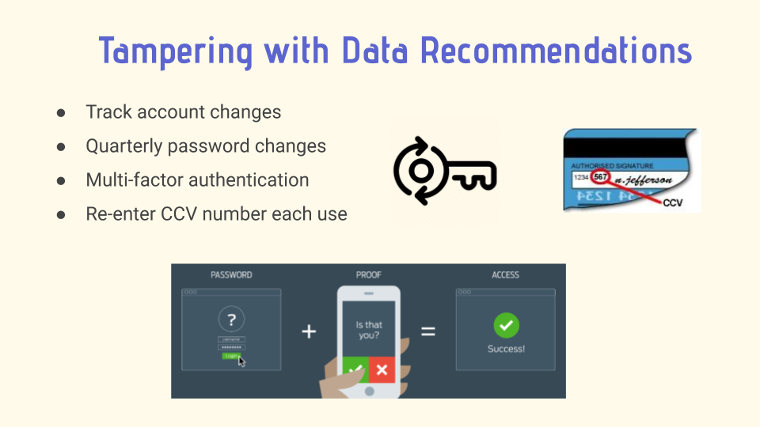

Madison Colvin
Networks & Cybersecurity
Networking Techologies & Food Delivery Apps
Overview
In my Business Data Communications course we were placed in teams of five to explore, in detail, a business-technology issue of our interest. We chose to examine and analyze how food delivery apps rely on networking technology. The purpose of this project was to develop up-to-date information on a relevant topic and understand how networking technology is evolving to keep up with the industry. To complete this project we applied class concepts and had the opportunity to confront real situations rather than artificial examples. In our project, we outlined our chosen industry, introduced the industry’s customers, and explained our industry’s business model. Additionally, we explored how data networking technology is utilized in food delivery apps and how it is set up. Lastly, we touched on some key challenges the industry might be facing and proposed recommendations to prevent any technical and business challenges.
Industry Background
As we progress through the Information Age, there have been constant advancements in technology that provide users with convenience, dissemination of information and a vast network to connect with. In addition to the rise of mobile technology, this has revolutionized the food delivery scene as people are now able to order meals from the comfort of their couch. As more and more restaurants join in, customers are no longer limited to just pizza and Chinese takeout, and they are offered a wide array of cuisines and options ranging from snacks and drinks to family sized meals. In the past decade, these delivery platforms have seen much success as third party services by monetizing through delivery charges, peak hour delivery surcharges, advertising for restaurants and taking a commission percentage based on predefined guidelines with the respective restaurant. Apps such as Postmates, GrubHub, UBEReats, and DoorDash charged a fee to restaurants and the end user in exchange for the convenience of ordering take out style food without the hassle of going to the restaurant in person.
Customers
Food delivery applications have two major customer types they serve: restaurants and the end user who places the order. The invention of food delivery apps have provided an efficient and effective way to order food from the comfort of the customers’ homes. Food delivery apps have seen a huge growth in the food industry in the last decade, and in 2015 alone, consumer spending on food delivery generated $30 billion in revenue in the United States (Lock, 2019). Customers choose to use food delivery apps for a variety of reasons, whether it's for the convenience of not having to cook, avoiding the clean-up from cooking at home, or to enjoy some delicious food. Delivery apps serve as a great alternative to dining in. In addition to the end user, food delivery apps also serve the restaurants who are fulfilling takeout orders. Through selling their products on a food delivery app, restaurants are making their products more accessible to their customers, providing them with another option to enjoy their products outside of the restaurant setting. Additionally, food delivery apps are much easier and more profitable for restaurants when considering the costs of employing their own drivers, hourly pay, the upfront cost of a delivery car, and dealing with the managerial aspects of lost or late orders (McCann, 2019).
Business Model
Food delivery apps act as delivery services connecting restaurants with customers who they may not without a
delivery service. Their primary source of revenue comes from the commissioned delivery fees on each order.
In general this rate is about 22-30%, depending on the order value, restaurant location, and restaurant
popularity (Dubrova, 2019). They can also generate revenue through advertising within the order platform.
This way, restaurants can pay for positioning in particular categories to reach more customers (Mohan, 2019).
Another source of revenue comes from special deals. Restaurants can partner with the delivery app for promotions
that upsell their items. This gives more visibility and attraction to the restaurant. For the delivery app,
this results in a higher commission. Other food delivery apps sometimes participate in white labeling,
where restaurants sell their product directly to the food delivery app. The app can turn this around
and sell the product purely as their own with their own branding
Networking Technology
Food delivery companies such as Uber Eats utilize various technologies to ensure the efficiency of its
business processes which primarily consists of cloud, Global Positioning System (GPS), and Internet of
things (IoT) technologies (Agarwal, 2019). The company has described the application of a Hybrid Cloud
system that mixes together third-party cloud computing services and co-located data centers spread around
the world. What distinguishes Hybrid Cloud is its efficiency in quickly scaling up business processes to
meet influx demands during certain times as it provides flexibility and accessibility for Uber systems to
receive and store data around the globe in various cloud systems (Dignan, 2019).
Another essential technology for food delivery companies is the use of GPS systems within the business processes. This technology allows real-time tracking to pinpoint locations in an efficient and precise manner (Iland, 2018). Companies like Lyft and UberEats understand the importance of security for both its customers’ and drivers' data. Thus the company consistently updates its GPS tracking system to meet the standard requirements that adheres to the law, while producing outcomes that increase security.
Furthermore, the existence of IoT within the food delivery network enhances the processes that it takes to maximize efficiency. A good example is the use of Smart Kitchen in restaurants, allowing the detection of necessary ingredients that may be lacking or even to check if the quality is still best for cooking (Singh, 2018). It accomplishes this through a series of scanners that can detect foods to analyze the results which can then notify the people through its application directly on the kitchen appliances such as a fridge or through a smartphone application (Aeris). In the end, IoT may also reduce costs resulting from the increased efficiency - allowing for faster deliveries from precise scheduling and minimizing excess waste.
Key Issues
A couple of issues concerning food delivery apps is data security and data breaches. An example of a data breach case in the online food delivery industry is the DoorDash data breach. In late September 2019, DoorDash announced that there was an information leak of 4.9 million customers, food restaurants, and delivery executives. Information including credit card numbers, bank accounts, driver’s license numbers, and home addresses were compromised (Leonhardt, 2019). The information was hacked by an unauthorized third-party service provider. In response to the data breach, DoorDash announced on its blog that it has taken additional necessary steps to strengthen its security across all platforms to affected users (DoorDash, 2019). This includes adding additional protective security layers around the data, improving security protocols in DoorDash’s systems and bringing outside expertise to identify and repel threats (DoorDash, 2019).
DoorDash also advised its affected users to reset their passwords that are unique to only DoorDash (DoorDash, 2019).
The CNBC further posted that a list of other action items that affected customers can take in addition to
resetting passwords, including setting up credit monitoring or drivers may want to put a freeze in their
credit report to prevent unauthorized access to their accounts (Leonhardt, 2019).
Now that the demand for food delivery service is higher than ever under COVID-10, food-delivery companies would have to step up their game to protect the clients’ information from cyber attacks and data breaches.
The Role of Networking Technology
As the stay-at-home order is implemented in various parts of the world, more people are relying on technology to do various activities as a replacement for being outside. This results in a surge in the usage of food delivery companies to cater to the needs of people working from home as there is an influx of users utilizing the applications (Hussey, 2020). As more information is collected and stored, more people are exposed to the danger of data breaches and cause concerns for data security. Thus, this is where networking technologies play a huge role in keeping their clients’ data secure. The implementation of cloud systems that are equipped with firewalls to filter out potential dangers that can breach data privacy ensures a high level of security that users can rely on. This process adheres to the CIA Triad framework; this is possible as a cloud Firewall provides the security in filtering traffic of sources from a variety of sources, creates the built-in-structure that is require to maintain efficiency of the network, and provides the capability to protect identity by facilitating a secure communication between the client and the server (Barracuda, n.d.). On top of that, the cloud servers also facilitate the Security, Functionality, Usability Triangle in ensuring there is balance within the triangle. To further enforce the triangle, companies such as GrubHub and UberEats create restrictions that ensure users and partners will stay within the limits of using the application; these are laid out in the terms and agreements of the applications and are usually prompted before the user creates an account.
Food delivery companies do not only focus on the security of their customers, but also the drivers which are considered partners of the company. The role of networking technology allows customers to gain information on their restaurant-of-choice by looking at reviews given by other customers. This information is stored in the company's cloud database that is located worldwide which enables accessibility for consumers around the world. For example, a customer who recently ordered food from a restaurant that has a low health rating reviewed the company app describing the characteristics of the restaurant. The information is then stored within the network of the Food Delivery companies and can then be viewed by employees and customers alike to put into consideration in assessing the restaurant before ordering. This process allows the sharing of data amongst the companies’ stakeholders that increases convenience while using the application (Rosenblat, 2018). More importantly, this process ensures that the Food Delivery companies can ensure customers’ satisfaction while also creating a safe community that drivers can rely on.
Technical Challenges
.png)
As with any and all data that is on the Internet, these applications face a multitude of technical
challenges that must be consistently improved upon or solved to provide users with all aspects of
the CIA Triad. Some technical challenges facing the industry include security threats like tampering
with confidential data, phishing emails, and data breaches. Because using the applications entails
enabling location services, entering sensitive information, and digital contact with the businesses,
users are left vulnerable to cyberattacks if businesses don’t use cybersecurity precautionary measures.
A recent case highlights the ease of obtaining personal information as there has been “a potential increase in account takeover attempts as criminals seek free food delivery during coronavirus” (Wistrom, 2020) due to “a threat actor sharing instructions for cracking and taking over meal-kit company accounts”. After gaining access to the account, hackers can easily modify the shipping address and have the delivery sent to themselves. Similarly, a London based food delivery app called Deliveroo has experienced “fraudulent orders placed by hackers who purchased usernames and password credentials on the dark web for as low as £5” (Goud, 2019). Even if the food delivery company’s database is secure and intact, the hacks could be from the customer’s end. Those with more malicious intent could even use the sensitive information gathered in the application such as email, phone number, and address to commit other scams like phishing, phone scams, and mail fraud. In another recent case, hackers sent “phishing email messages to convince targets to browse to sites masquerading as online and food delivery services” (Tung, 2020). Once the victims click the email, they are led to a phishing page designed to capture their Google account credentials without the victim ever knowing. Although food delivery apps provide convenience and ease, using them undoubtedly increases your exposure to cybercrimes.
Other data breach examples include the 2019 DoorDash breach mentioned earlier. Extremely sensitive and valuable information such as credit card information, delivery addresses (potentially home addresses), and driver’s license numbers were stolen, accessed through an unnamed third-party service provider. In a similar attack, Home Chef, a meal delivery service confirmed a data breach extremely recently, in May 2020. In this case, eight million of Home Chef’s customer records were found being sold on the dark web. This information includes names, emails, phone numbers, and hashed passwords. It is plausible that this information was also accessed via a third-party vendor or other service that had connections with the business’ network. From there they may be able to access the network and the desired information. This poses a significant threat to businesses’ reputations and customer confidence.

As alarming as these security threats are, taking precautionary measures can decrease the chances of
successful cyberattacks. The company can introduce security measures to counter fraud and address tampering
with confidential data by tracking account changes and informing the customer immediately and to implement
requirements of quarterly password changes. The apps should also standardize the use of multi factor
authentication such as SMS or mobile call authentication before allowing changes to the account, as
well as reentering the CCV each time an order is placed. Though these methods may negatively affect usability,
these methods better ensure the safety of the consumer and the unauthorized release of sensitive information.
As for ways to protect against phishing emails, food delivery application companies should standardize the use of
digital signatures for exchanges in the internal network. Because digital signatures are used to authenticate the
identity of the sender of a message and ensure the content of the message was unchanged, client information is
safer as it is very unlikely that hackers have the company’s digital signature, thus foiling any phishing
attempts on company employees.
Another way hackers can obtain sensitive information by phishing is by
sending an email saying the user’s account is compromised or have been signed in on a new device.
They then prompt the user to change their password and when the user becomes a victim, the account
is actually compromised and the hacker has the victim’s password. For this kind of phishing attempt,
food delivery companies should urge the users to proceed with more caution and check for legitimacy
before opening them. Suspicious signs include grammatical errors, the use of file attachments,
and hidden or hyperlinked links. Hackers may also use spoofed email or web addresses that are
similar to the company’s, so it is best if users are reminded to be vigilant while opening these emails.
Another way to improve against the consequences of a data breach is to protect the internal information.
For example, both DoorDash and Home Chef avoided certain disaster by hashing and salting passwords before
storing them. In both cases, the stolen user passwords arrived in the hands of the attackers scrambled
beyond recognition. This was because of a process called hashing and salting. Hashing is when a
computer applies a complex algorithm to the user’s password, turning it into a long complex
string of characters before sending it to the business’ servers. Salting is adding a unique
value called a “salt” to the end of the password before hashing, an extra layer of security.
This way if an attacker can somehow break through the hashed password, they still need to work
out the salt used on any given password. It is important to note that the salt should not be
the same for every password as users with the same passwords would be extra vulnerable (Nohe, 2018).
Additionally, DoorDash specifically stated that they would be improving the security protocols
granting access to their systems and adding more layers of security to their data (DoorDash, 2019).
Additional security measures that food delivery application companies can take are to vet their
applications against documented standards from a reputable source like the National Institute of
Standards and Technology (NIST) and mandate annual penetration testing. NIST is a United States
Department of Commerce agency with a mission to “promote US innovation and industrial competitiveness
by advancing measurement science, standards, and technology” (GovInfo, n.d.). NIST compiles the top
standards for security issues into a special publication (NIST, 2019), which can be used as a security
standard. Companies can also perform annual penetration testing to attack the application to
discover vulnerabilities they have not yet found. As hackers find new ways to reach victims,
companies must periodically check if there are any security vulnerabilities on their end using
this process, also known as “ethical hacking.” If vulnerabilities are found, companies should
work efficiently to solve them in the next update so costly consequences can be avoided.
Business Challenges
As a result of technical challenges such as security concerns with the surge of new users during COVID-19,
and potential compromised data breaches, food delivery services face a variety of new business challenges.
Currently, food delivery services are seeing unpredicted levels of use due to COVID-19. Because of these
unforeseen changes in use, companies may not have been adequately prepared to welcome this large number
of new users. If the user’s data is breached, releasing personal data such as credit card information,
addresses, and other confidential information, food delivery services could face potential lawsuits.
Depending on the type of breach, food delivery services could face numerous individual lawsuits and
potential class action lawsuits. Additionally, if a user’s credit card information is compromised,
the firm will be in breach of Payment Card Industry Data Security Standard (PCI DSS) and will be
heavily fined for leaking this sensitive information. The PCI DSS is an information security
standard for companies that protects cardholders by ensuring that businesses meet certain security
standards when they transmit, process, and store cardholder information.
According to a 2018 study performed by Ponemon, the cost of a data breach that results
in the loss of 100,000 records or less costs a company $3.86 million on average in legal
fees, fines, and other resulting expenses such as the cost of hiring security consultants.
While the cost of a larger breach, 1-50 million lost records, can cost anywhere from $40-$350 million
(Semafone, n.d.). Not only will a data breach cost a company a large sum in legal fees and other
financial losses, but a loss of user data can damage a company’s brand reputation. By compromising
user data, the company is at risk of losing their current customer base. Currently there are a
large number of food delivery apps in the market, so if a customer is not brand loyal or feels
as though their information is not safe ordering through a compromised platform, they are
likely to switch to a competing brand.
If the technical challenges are met, and the company takes extra measures to ensure that
user data is not breached, their business challenges will be mitigated. On the other hand,
if a food delivery service is not able to successfully secure their user’s data and information
is leaked, the company should take the following steps to ensure they maintain their brand
reputation and do not suffer extreme financial loss. First, the company should put in place
a plan to maintain customer loyalty and regain trust in case of a data breach. It is vital
to be transparent with customers, be honest about the types of data that were breached, and
be prepared to share the steps the company is taking to improve and ensure customer security.
During a data breach, a company will inevitably lose a portion of their customer base, but it is
important that they reward their loyal customers with generous promotions and discounts.
Second, to prepare for a possible data breach, food delivery companies should purchase cybersecurity insurance to minimize the cost of lost customer data. Cyber security insurance premiums range greatly and can cost anywhere between $5,000-$120,000 a year depending on how much financial assistance the company would like to receive after a breach, company size, and annual revenue (Barney, n.d.). Although this might seem like a large upfront cost, it significantly alleviates the financial burden of a large data breach that can cost a company millions. In addition, food delivery service companies should seek internal legal counsel for advice to ensure the company is legally protected in case of any lawsuits related to a potential breach.
Conclusion
As mentioned throughout the report, food delivery services have seen a major spike in demand because of COVID-19. Due to this increased use, companies must step up their game to take necessary precautions to prevent a data breach and secure their platforms. Considering the data breach issue we’ve seen in the DoorDash and other food delivery app case studies, we have compiled a list of strategic recommendations to help companies cope with the technical and business challenges. This includes adhering to the minimum standards for network security, such as hashing and salting passwords, being PCI DSS compliant, standardizing the use of multi-factor authentication in online purchasing or password change, and using digital signatures. Companies should also consider utilizing an advanced system to secure their network, and this includes login requiring 2FA and resetting passwords quarterly. On the business end we recommend putting in place action plans in case of data breaches, obtaining cybersecurity insurance, and seeking legal counsel early to mitigate the damages of potential lawsuits.
References
- Agarwal, V. (2019, November 19). How Cloud Kitchen Restaurant Trend Impacts $200B Online Food Delivery Space. Retrieved from https://modernrestaurantmanagement.com/how-cloud-kitchen-restaurant-trend-impacts-200b-online-food-delivery-space/
- Barney, B. (n.d.). Cyber Breach Insurance: How Much Does it Cost? Retrieved from https://www.securitymetrics.com/blog/cyber-breach-insurance-how-much-does-it-cost
- Barracuda. (n.d.). What are Cloud Firewalls. Retrieved from https://www.barracuda.com/glossary/cloud-firewall
- Dignan, L. (2019, May 10). Uber vs. Lyft: How the rivals approach cloud, AI, and machine learning. Retrieved from https://www.zdnet.com/article/uber-vs-lyft-how-the-rivals-approach-cloud-ai-machine-learning/
- DoorDash. (2019, September 26). Important security notice about your DoorDash account. Retrieved from https://blog.doordash.com/important-security-notice-about-your-doordash-account-ddd90ddf5996
- Dubrova, D. (2019, September 3). How to Create a Food Delivery App like UberEats. Retrieved from https://theappsolutions.com/blog/how-to/app-like-ubereats/
- Goud, N. (2019, July 25). Hackers buy passwords of Deliveroo users and place fraudulent orders. Retrieved from https://www.cybersecurity-insiders.com/hackers-buy-passwords-of-deliveroo-users-and-place-fraudulent-orders/
- GovInfo. (n.d.). National Institute of Standards and Technology (NIST) Publications. Retrieved from https://www.govinfo.gov/collection/nist
- Hussey, A. (2020, April 11). Food Delivery in Demand During COVID-19. Retrieved from https://kerry.com/insights/kerrydigest/2020/food-delivery-in-demand-during-covid-19
- Iland, D. (2018, April 19). Rethinking GPS: Engineering Next-Gen Location at Uber. Retrieved from https://eng.uber.com/rethinking-gps/
- Leonhardt, M. (2019, September 27). 5 things you should do if you suspect you were affected by the DoorDash data breach. Retrieved from https://www.cnbc.com/2019/09/27/doordash-data-breach-5-things-to-do-if-you-were-affected.html
- Lock, S. (2019, March 8). Food delivery industry in the U.S. Retrieved from https://www.statista.com/topics/1986/food-delivery-industry-in-the-us/
- McCann, K. (2019). Pros and Cons of Offering Food Delivery Service. Retrieved from https://www.touchbistro.com/blog/pros-and-cons-of-offering-food-delivery-service/
- Mohan, R. (2019 6). What is the Business Model of food delivery apps? Retrieved from https://retailritesh.com/2019/01/06/food-delivery-apps/
- NIST. (2019, April 19). Vetting the Security of Mobile Applications: NIST Publishes SP 800-163 Revision 1. Retrieved from https://www.nist.gov/news-events/news/2019/04/vetting-security-mobile-applications-nist-publishes-sp-800-163-revision-1
- Nohe, P. (2018, December 19). The difference between Encryption, Hashing and Salting. Retrieved from https://www.thesslstore.com/blog/difference-encryption-hashing-salting/
- Rosenblat, A. (2018, January 9). The Network Uber Drivers Built. Retrieved from https://www.fastcompany.com/40501439/the-network-uber-drivers-built
- Semafone. (n.d.). A Guide to PCI DSS Fines and Penalties. Retrieved from https://semafone.com/blog/a-guide-to-pci-dss-fines-and-penalties/
- Singh, H. (2018, October 10). How can IoT Assist in Making the On-demand Delivery Chain Smoother? Retrieved from https://customerthink.com/how-can-iot-assist-in-making-the-on-demand-delivery-chain-smoother/
- Tung, L. (2020, April 23). Google: US government targeted with 'free fast food' coronavirus phishing. Retrieved from https://www.zdnet.com/article/google-us-government-targeted-with-free-fast-food-coronavirus-phishing/
- Wistrom, B. (2020, March 19). How Hackers Target Food Deliveries During the Coronavirus Pandemic. Retrieved from https://www.americaninno.com/austin/inno-news/how-hackers-target-food-deliveries-during-the-coronavirus-pandemic/